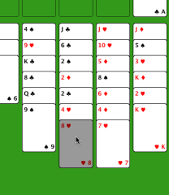

フリーセルのヘルプ
フリーセルのヘルプ
遊び方
カードは簡単に動かせます。まず、動かしたいカードをクリックしてください。そのカードが目立つように色が変わります。次に、動かしたい先の場所をクリックしてください。ルールを破っていなければ、カードが動きます。もし、間違って動かしてしまっても、いつでも元に戻せます。
|  | さぁ、ここでハートの8をスペードの9の下に動かしてみましょう。3列目をクリックして、3列目の最後のカードの色が目立つ色に変わっています。 |

|
次に、2列目をクリックして、カードを2列目の下に動かしました。左上のカード置き場に動かしたいときは、カードを動かしたい先をクリックするときに、左上のカード置き場をクリックします。 |